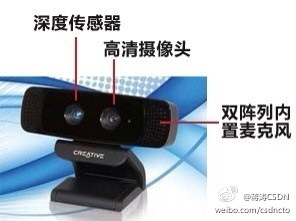
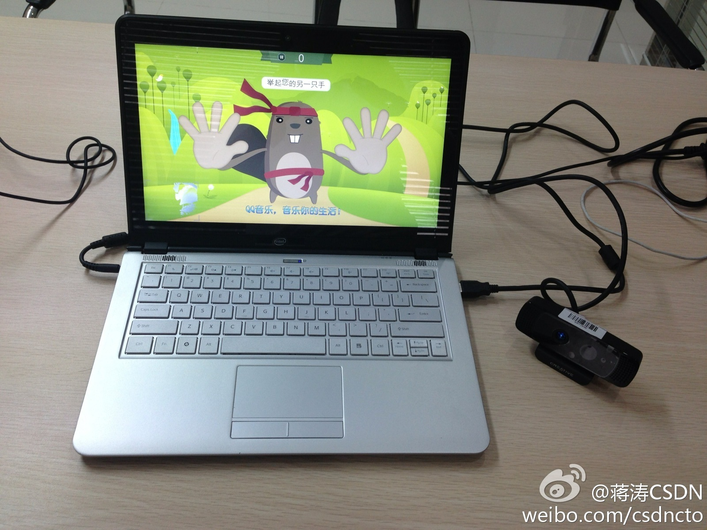

售票期结束，就不占用广告位了。会议首页能查到：网页链接@小事儿爹:真是奇怪，第5届中国云计算大会居然在云计算大会官网的首页上找不到？ 网页链接 @蒋涛CSDN @Ada李力 我知道有专门页面，但是首页上也应该有链接，横幅啥的才对啊。。。
//@CSDN李涛: 果然有工匠精神！赞一个！//@Adela可爱多: @Ada李力 也建立了云计算俱乐部的各地分会，大会当晚（6月6日）会有由一姐主持的分会负责人的晚宴，让大家social，自由交流。以后云计算俱乐部会用会务、礼品、媒体等方式大力支持各地开展的云计算线下活动。---:抱歉，作者已设置仅展示半年内微博，此微博已不可见。
上去看了看，是个全球的创意及编程竞赛项目，需要英文，门槛还是有些高。不过这种竞赛倒是可以看看我们中国程序员的水平。@蒋涛CSDN:试用Intel感知摄像头，人机交互正在产生革命性变化，值得密切关注。Intel感知计算已不仅是肢体感应那么简单，通过硬件设备和最新的SDK我们可以看到，除了手势之外，它还支持语音控制、面部表情识别等。有兴趣开发者可关注这个感知开发大赛：网页链接 